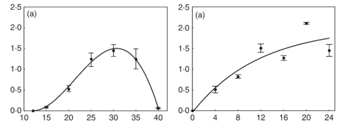

In many processes of the disease cycle, such as infection - one of the most critical components for disease forecasting - the interaction between temperature and the duration of moisture determine the amount of succesful infection sites and resulting disease severity. This post shows how to fit, in R language, a form of the Analytis beta model to infection data as a function of temperature and an asymptotic regression model to infection as a function of moisture duration.
Studies on the relationship between environmental variables and disease in the field are fundamental to develop empirical (statistical) disease prediction models (Del Ponte et al. 2006). On the other hand, relationships studied in the controlled environment (laboratory or greenhouse) provide a basis to develop fundamental models or sub-models that describe specific processes such as sporulation, dispersal, infection and incubation (Magarey et al. 2005; Krause and Massie 1975). These submodels can be further incorporated into mechanistic models that mimic advance of the disease cycle (Rossi et al. 2008), or directly into predictive systems where the infection submodel is the most critical information for disease occurrence (MacHardy 1989). The infection models are based on regression equations of various forms (Magarey et al. 2005; Biggs 1988; De Wolf and Isard 2007; Dalla Pria et al. 2006).
Here, we will fit a beta generalized model (Hau and Kranz 1990) to data on the response to temperature and an asymptotic regression model to data on the response to wetness duration. The integration of the two models can be used to develop contour or surface-response plots.
We will use a subset of the data obtained from a study conducted under controlled conditions that aimed to assess the influence of temperature and leaf wetness duration on infection and subsequent symptom development of citrus canker in sweet orange (Dalla Pria et al. 2006).
The data used here is only for severity on the cultivar Hamlin. The mean value was extracted from Figures 1 and 2 (see below). The left plot is for the response to temperature and the right plot is for the response wetness duration. The response is severity of infection.

The data was extracted using the R package digitize as shown here on this tweet.
Let’s enter the data manually. t is the temperature and y is the severity on leaves.
temp <- tibble::tribble(
~t, ~y,
12.0, 0.00,
15.0, 0.1,
20.0, 0.5,
25.0, 1.2,
30.0, 1.5,
35.0, 1.2,
40.0, 0.1
)Fit the beta generalized model (Hau and Kranz 1990). The model can be written as:
\[ y = a*((t - b )^d)*((c - t)^e) \]
where b and d represent minimum and maximum temperatures, respectively, for the development of the disease, a, c and e are parameters to be estimated, t is the temperature and y is disease severity. We need the minpack.lm library to avoid parameterization issues.
library(minpack.lm)
fit_temp <- nlsLM(y ~ a*((t - b )^d)*((c - t)^e),
start = list(a = 0,
b = 10,
c = 40,
d = 1.5,
e = 1),
algorithm = "port",
data = temp)
summary(fit_temp)
Formula: y ~ a * ((t - b)^d) * ((c - t)^e)
Parameters:
Estimate Std. Error t value Pr(>|t|)
a 0.001303 0.006295 0.207 0.855
b 11.999999 4.875412 2.461 0.133
c 40.137236 0.346763 115.748 0.0000746 ***
d 1.760101 1.193017 1.475 0.278
e 0.830868 0.445213 1.866 0.203
---
Signif. codes: 0 '***' 0.001 '**' 0.01 '*' 0.05 '.' 0.1 ' ' 1
Residual standard error: 0.1121 on 2 degrees of freedom
Algorithm "port", convergence message: Relative error between `par' and the solution is at most `ptol'.[1] 0.9898275Store the model parameters in objects.
fit_temp$m$getAllPars() a b c d e
0.00130259 11.99999936 40.13723602 1.76010097 0.83086798 a <- fit_temp$m$getAllPars()[1]
b <- fit_temp$m$getAllPars()[2]
c <- fit_temp$m$getAllPars()[3]
d <- fit_temp$m$getAllPars()[4]
e <- fit_temp$m$getAllPars()[5]Create a data frame for predictions at each temperature unit from 10 to 45 degree Celsius.
t <- seq(10,45, 0.1)
y <- a*((t - b )^d)*((c - t)^e)
dat <- data.frame(t, y)Plot the observed and predicted data using ggplot2 package.
library(tidyverse)
dat |>
ggplot(aes(t, y))+
geom_line()+
geom_point(data = temp, aes(t, y))+
theme_classic(base_size = 16)+
labs(x = "Temperature", y = "Severity" )Again, we enter the data manually. The x is wetness duration in hours and y is severity.
wet <- tibble::tribble(
~x, ~y,
0 , 0,
4 , 0.50,
8 , 0.81,
12, 1.50,
16, 1.26,
20, 2.10,
24, 1.45
)Now we fit a three-parameter asymptotic regression model. These models describe a limited growth, where y approaches an horizontal asymptote as x tends to infinity. This equation is also known as Monomolecular Growth, Mitscherlich law or von Bertalanffy law. See this tutorial for comprehensive information about fitting several non-linear regression models in R.
The model can be written as
\[ y = c1 + (d1-c1)*(1-exp(-x/e1)) \]
Where c is the lower limit (at x = 0), the parameter d is the upper limit and the parameter and e (greater than 0) is determining the steepness of the increase as x.
We will solve the model again using the nlsLM function. We should provide initial values for the three parameters.
library(minpack.lm)
fit_wet <- nlsLM(y ~ c1 + (d1-c1)*(1-exp(-x/e1)),
start = list(c1 = 0.5,
d1 = 3,
e1 = 1),
data = wet)
summary(fit_wet)
Formula: y ~ c1 + (d1 - c1) * (1 - exp(-x/e1))
Parameters:
Estimate Std. Error t value Pr(>|t|)
c1 -0.04898 0.31182 -0.157 0.8828
d1 2.00746 0.70594 2.844 0.0467 *
e1 11.63694 9.33184 1.247 0.2804
---
Signif. codes: 0 '***' 0.001 '**' 0.01 '*' 0.05 '.' 0.1 ' ' 1
Residual standard error: 0.3296 on 4 degrees of freedom
Number of iterations to convergence: 7
Achieved convergence tolerance: 0.0000000149[1] 0.8532282Store the value of the parameters in the respective object.
HW <- seq(0,24, 0.1)
c1 <- fit_wet$m$getAllPars()[1]
d1 <- fit_wet$m$getAllPars()[2]
e1 <- fit_wet$m$getAllPars()[3]
y <- (c1 + (d1-c1)*(1-exp(-HW/e1)))
dat2 <- data.frame(HW, y)Now we can plot the results and the original data.
library(tidyverse)
dat2 |>
ggplot(aes(HW, y))+
geom_line()+
geom_point(data = wet, aes(x, y))+
theme_classic(base_size = 16)+
labs(x = "Wetness duration", y = "Severity" )Integrate the two equations to create a contour plot. We need a data frame for the interaction between t and hours of wetness. Then, we obtain the disease value for each combination of t and HW.
t <- rep(1:40,40)
HW <- rep(1:40, each = 40)
dis <- (a*(t - b )^d)*((c - t)^e) * (c1 + (d1-c1)*(1-exp(-HW/e1)))
validation <- data.frame(t, HW, dis)Now the contour plot can be visualized using ggplot2 and geomtextpath packages.
library(ggplot2)
library(geomtextpath)
ggplot(validation, aes(t, HW, z = dis)) +
geom_contour_filled(bins = 8, alpha = 0.7) +
geom_textcontour(bins = 8, size = 2.5, padding = unit(0.05, "in")) +
theme_minimal() +
theme(legend.position = "right")+
ylim(0, 40)+
labs(y = "Wetness duration (hours)", fill = "Severity", x = "Temperature (Celcius)")That’s it. Feel free to reach me in case of questions!